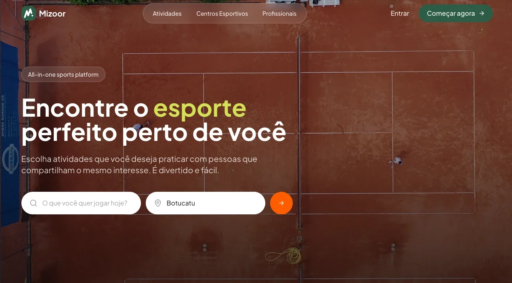
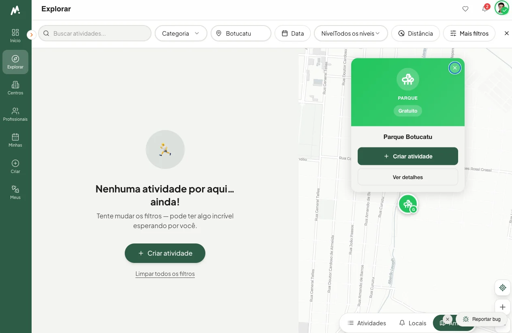
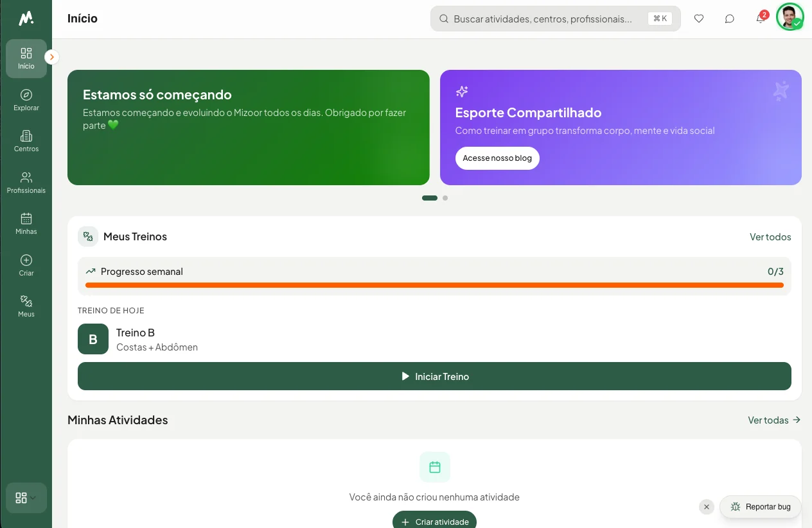

Mizoor.
Transforma a vontade de praticar esporte numa atividade com lugar, horário e pessoas.
O produto na prática.
Telas do Mizoor em uso, em Botucatu.



Três frentes num lugar só.
Não é só um catálogo de quadras, nem só uma rede social.
- 1
Comunidade e organização
Atividades, participantes, perfis, avaliações e conversas.
- 2
Descoberta e acesso
Esportes, mapa, locais públicos, centros e profissionais.
- 3
Gestão
Agenda, reservas, turmas, clientes e equipe para parceiros.
Criar um jogo em cinco etapas.
O assistente salva rascunho sozinho e mostra a prévia enquanto você preenche.
Qual esporte?
Futevôlei, beach tennis, padel, corrida e outros.
Detalhes
Nome, descrição e o que esperar do encontro.
Quando e onde
Data, horário e local no mapa.
Participantes
Vagas, valor, aprovação e privacidade.
Visual
Uma imagem para o convite, se quiser.
Depois é compartilhar por WhatsApp, email ou link, acompanhar quem vai e fazer check-in por QR code no dia.
Para quem é.
| Quem | O que faz no Mizoor |
|---|---|
| Atleta | Descobre jogos perto de casa, entra em atividades e conversa com o grupo. |
| Organizador | Publica o encontro, aprova participantes e cuida do dia. |
| Profissional | Mostra credenciais, atende alunos e monta fichas de treino. |
| Centro esportivo | Divulga espaços e administra reservas, turmas e clientes. |
Uma área de gestão para parceiros.
Profissionais e centros passam por verificação em níveis e ganham ferramentas para operar.
Operação
- Calendário, reservas e disponibilidade
- Turmas e presença
- Equipe com permissões
Relacionamento e treino
- CRM de clientes e alunos
- Avaliações e fichas de treino
- Indicadores de ocupação e conversão
Grátis para quem joga.
Planos da página de tarifas. Mensalidade para parceiros, sem comissão por reserva.
- Grátis
- Atletas
- R$ 49
- por mês, profissional Pro. O Básico é grátis.
- R$ 99
- por mês, centro esportivo Starter
- R$ 199
- por mês, centro esportivo Business
Como é feito.
Uma aplicação web com tempo real, mapas e áreas separadas para atleta, parceiro e administração.
- React 18
- TypeScript
- Vite
- Supabase
- Edge Functions
- Tailwind CSS
- shadcn/ui
- MapLibre
- React Query
Começou como plano de MBA.
Em 2019, com mais três sócios.
- 69,8%
- abandonam o esporte por falta de tempo
- Ministério do Esporte, pesquisa de 2013
- 53%
- dos brasileiros querem praticar mais
- Ipsos, via CNN Brasil
- US$ 2,1 bi
- no mercado de atividade física
- VocêRH
As personas do primeiro MVP.
Travoltinha do esporte
Não sabe por onde começar.
Forever alone
Quer praticar, mas não tem com quem.
Eterno promessinha
Sempre vai começar na segunda.
Amante da endorfina
Quer se mexer a toda hora, em todo lugar.
Quatro sócios.
Rafael Zigart
Founder, CEO e CPO
Produto, P&D e o time de desenvolvimento.
Helio Matsuda
COO
Operações, processos e fornecedores.
Luana Paganini
CCO
Vendas guiadas por dados.
Fabio Takahashi
CGO
Marketing digital e crescimento.